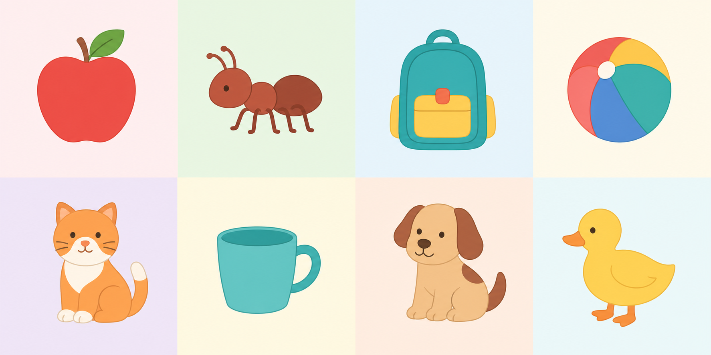

PHONICS QUIZ · v4 SAMPLE
A to D
A to D
Sound Steps
Big letters, little letters, sounds, and first words for beginning readers.
6 playful questionsA–D reviewListen & chooseBuild a word
Start PH0001 →

Prototype for Decodable Readers. It keeps the v3 interaction family while shifting the learning focus from Story Grammar to letter–sound–word connections.